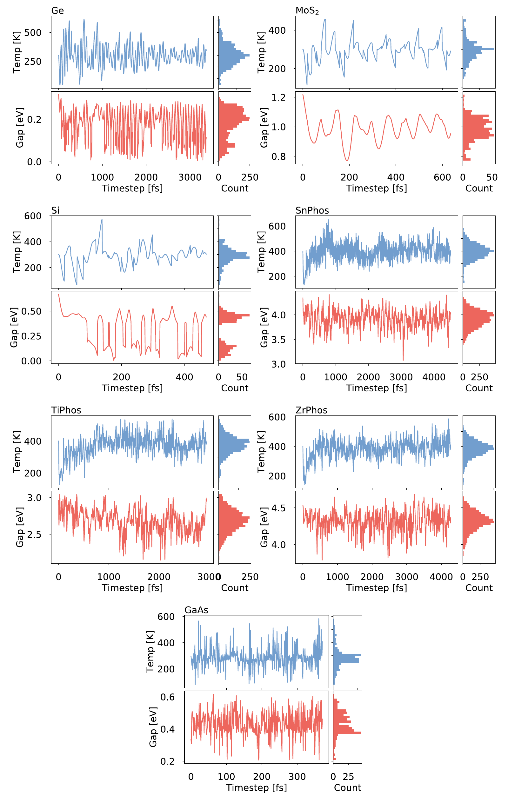
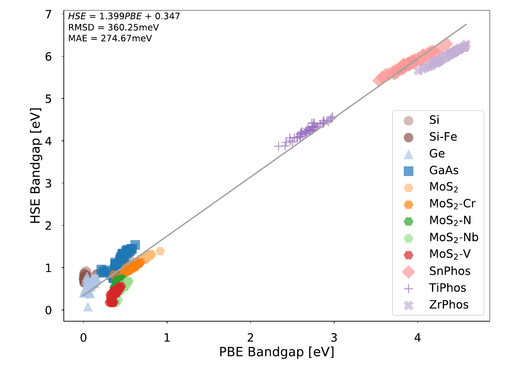
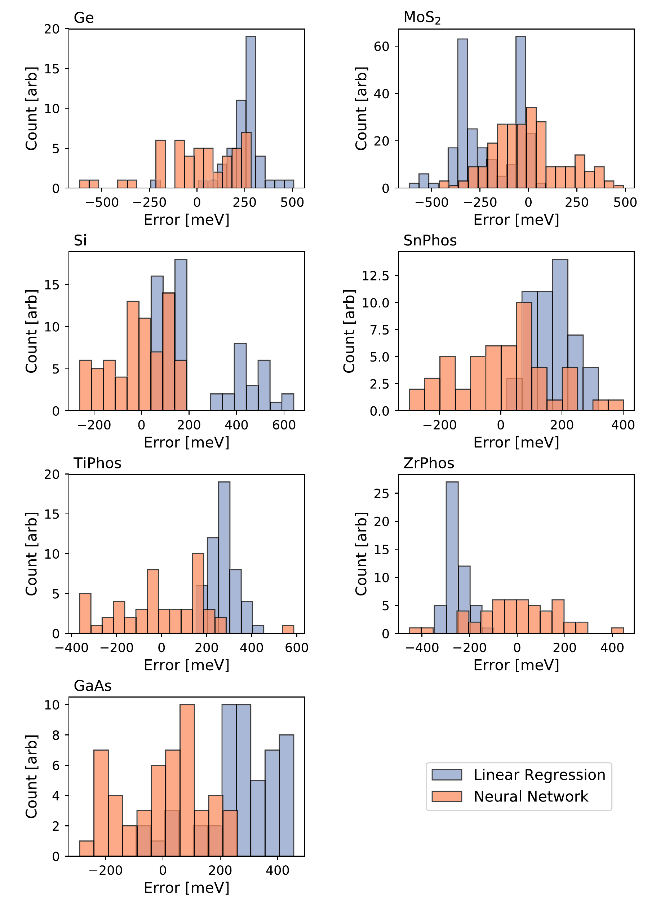

Ringkasan Singkat untuk Peneliti (4 Poin Utama)
1. Paradoks Komputasi Celah Pita DFT: Fungsional semi-lokal standar (PBE) menderita *self-interaction error* (SIE) kronis yang menyebabkan *underestimation* celah pita semikonduktor sebesar 30–50%. Sebaliknya, fungsional hibrida *screened-exchange* (HSE06) mampu memprediksi celah pita secara akurat namun menuntut beban komputasi 2 hingga 3 orde magnitudo lebih mahal, membatasi simulasi supercell dan *high-throughput screening*.
2. Paradigma Fungsional Neural Network Real-Space: Berbeda dengan pendekatan machine learning konvensional yang mengandalkan deskriptor koordinat atomik diskrit (seperti SOAP atau CGCNN), metode ini melatih jaringan saraf tiruan secara langsung pada fungsional integral kerapatan muatan ruang-nyata: `E_gap^HSE = ∫ f(ρ_PBE(r)) d³r`. Pendekatan fungsional murni ini secara inheren mempertahankan invarian translasi dan rotasi tanpa memerlukan augmentasi data geometris.
3. Efisiensi Skalabilitas Lewat Downsampling Grid FFT: Kisi kerapatan muatan FFT riil yang memuat ratusan ribu hingga 1.38×10⁶ titik spasial berhasil direduksi sebesar faktor 8 melalui skema *spatial downsampling* berbasis stride 2. Penataan ini mempertahankan struktur fungsional lokal secara utuh sembari memangkas drastis waktu komputasi pelatihan model.
4. Keunggulan Presisi dan Generalisasi Termal: Evaluasi pada 538 konfigurasi non-logam di 7 fasa semikonduktor/isolator membuktikan model komite neural network meraih RMSE 172.6 meV (memangkas galat hingga 34% dibanding regresi linier 263.1 meV). Pada pengujian transferabilitas konfigurasi dinamis suhu tinggi 600 K yang tidak pernah dilatih, model tetap mempertahankan keunggulan akurasi tanpa mengalami kegagalan ekstrapolasi.
1. Dilema Biaya Komputasi DFT: Batasan PBE dan Mahalnya Fungsional Hibrida HSE
Dalam rekayasa material kuantum kontemporer—mulai dari fotovoltaik berefisiensi tinggi, fotokatalis pemecah air, hingga devais semikonduktor daya generasi lanjut—celah pita elektronik (*electronic band gap*) merupakan parameter fundamental yang menentukan seluruh fungsionalitas optoelektronik material. Sejak perumusan teorema Hohenberg-Kohn dan persamaan Kohn-Sham, Teori Fungsional Kerapatan (Density Functional Theory, DFT) telah menjadi pilar utama komputasi *ab initio* keadaan dasar zat padat. Namun demikian, komunitas fisika material senantiasa terbelenggu oleh paradoks akurasi versus biaya komputasi yang tajam antara berbagai tingkatan tangga Jacob (*Jacob's ladder*) fungsional pertukaran-korelasi.
Pendekatan General Gradient Approximation (GGA), khususnya parameterisasi Perdew-Burke-Ernzerhof (PBE), menjadi standar kerja de facto dalam simulasi penapisan skala besar (*high-throughput screening*) karena efisiensi skalabilitas komputasinya yang sangat terjangkau (`O(N³)` atau lebih baik). Namun, GGA-PBE mengalami kelemahan bawaan mendasar berupa galat swa-interaksi (*self-interaction error*, SIE) dan ketiadaan lompatan potensial diskontinuitas turunan (*derivative discontinuity*). Konsekuensinya, PBE secara sistematis meremehkan (*underestimates*) celah pita kristal hingga 30–50%, bahkan acap kali keliru memprediksi semikonduktor celah sempit (seperti Ge murni) sebagai logam semi-tanpa celah.
Persamaan Kohn-Sham memetakan sistem banyak-elektron nyata ke sistem partikel independen fiktif. Nilai eigen Kohn-Sham (`ε_i`) pada prinsipnya bukan eksitasi kuasipartikel nyata melainkan parameter Lagrange matematika. Pada fungsional semi-lokal seperti PBE, potensial pertukaran-korelasi `v_xc(r) = δE_xc / δρ(r)` kontinu terhadap jumlah elektron `N`, mengabaikan lompatan diskontinuitas turunan `Δ_xc`. Akibatnya, celah pita Kohn-Sham `E_gap^KS = ε_LUMO - ε_HOMO` jauh lebih kecil daripada celah pita kuasipartikel sejati `E_gap = I - A`.
Fungsional hibrida Heyd-Scuseria-Ernzerhof (HSE06) mengatasi cacat ini dengan menyertakan fraksi pertukaran eksak Hartree-Fock jarak-pendek (*short-range exact exchange*, ~25%) yang disaring melalui parameter penyaringan `ω = 0.2 Å⁻¹`. Integrasi pertukaran eksak ini mengeliminasi sebagian besar SIE dan menghasilkan celah pita yang berkesesuaian sangat tinggi terhadap eksperimen. Namun, evaluasi integral pertukaran non-lokal dua-elektron menaikkan kebutuhan memori dan waktu komputasi CPU sebesar 100 hingga 1.000 kali lipat dibanding perhitungan PBE standar.
Upaya kompromi yang lazim digunakan dalam literatur komputasi adalah menerapkan penskalaan linier sederhana: peneliti kerap mengasumsikan bahwa celah pita HSE memiliki korelasi linier terhadap celah pita PBE (`E_gap^HSE ≈ m · E_gap^PBE + b`). Meskipun korelasi kasar ini dapat memberikan perkiraan umum untuk struktur kristal setimbang sempurna, relasi linier terbukti gagal total ketika material mengalami distorsi kisi akibat dinamika fonon termal pada suhu riil, pembentukan cacat titik (*point defects*), maupun dopan interstisial. Pada kondisi-kondisi tersebut, fluktuasi medan potensial lokal dan hibridisasi orbital menghasilkan deviasi celah pita non-linier yang rumit.
Kondisi ini memicu pertanyaan riset fundamental: apakah mungkin mengekstrak celah pita akurat setingkat HSE06 secara langsung dari perhitungan kerapatan muatan PBE yang murah, tanpa harus pernah menyelesaikan integral pertukaran non-lokal HSE yang amat mahal? Levi C. Lentz dan Alexie M. Kolpak dari MIT menjawab tantangan ini dengan merevolusi formulasi jaringan saraf tiruan agar bertindak sebagai fungsional terintegrasi pada ruang kerapatan muatan riil.
2. Formulasi Fungsional Neural Network: Pelatihan Langsung pada Kernel Kerapatan Muatan
Mayoritas arsitektur pembelajaran mesin (machine learning, ML) yang berkembang pesat dalam ilmu material mutakhir—seperti Smooth Overlap of Atomic Positions (SOAP), Atom-Centered Symmetry Functions (ACSF), SchNet, atau Crystal Graph Convolutional Neural Networks (CGCNN)—dibangun di atas representasi koordinat posisi atomik `{R_i}` dan nomor atom `{Z_i}`. Kendati terbukti ampuh untuk memprediksi permukaan energi potensial (Potential Energy Surfaces, PES), deskriptor berbasis koordinat atomik menghadapi keterbatasan serius ketika harus memprediksi sifat eksitasi elektronik seperti celah pita kristal.
Celah pita suatu material merupakan sifat global yang sangat sensitif terhadap rincian kerapatan muatan valensi lokal, polarisasi ikatan kimia, serta delokalisasi elektron di ruang antar-atom. Koordinat atomik semata tidak memuat informasi distribusi muatan elektronik keadaan dasar secara eksplisit. Merujuk langsung pada teorema dasar Hohenberg-Kohn yang menetapkan bahwa kerapatan muatan keadaan dasar `ρ(r)` secara unik menentukan seluruh sifat kuantum sistem, Lentz dan Kolpak merumuskan fungsional jaringan saraf tiruan yang beroperasi langsung pada kisi kerapatan muatan ruang-nyata `ρ(r)`.
Di mana `f(ρ)` adalah transformasi non-linier yang dipelajari oleh jaringan saraf tiruan terhadap nilai skalar kerapatan muatan lokal. Dalam implementasi komputasi praktis berbasis gelombang bidang (*plane-wave pseudopotential*), kerapatan muatan direpresentasikan pada kisi diskrit Fast Fourier Transform (FFT) yang membagi sel satuan menjadi `N_grid` titik spasial bervolume diferensial `dV = V_cell / N_grid`. Dengan demikian, integral analitik pada Persamaan 1 bertransformasi menjadi penjumlahan riemann terbobot di seluruh titik kisi komputasi:
Keunggulan arsitektural dari formulasi fungsional integratif ini sangat luar biasa dibanding model berbasis deskriptor posisi:
- Invarian Simetri Alami: Karena integrasi volume `∫ d³r` bersifat invarian terhadap translasi dan rotasi kisi koordinat, model secara otomatis memenuhi seluruh hukum simetri ruang tanpa membutuhkan teknik augmentasi data geometris (*rotational/translational data augmentation*) yang boros memori.
- Agnostik Ukuran Sel Satuan: Model dapat mengevaluasi supercell dengan jumlah atom dan volume sel berapapun tanpa memodifikasi arsitektur jaringan, sebab normalisasi volume `V_cell / N_grid` secara inheren menjaga konsistensi dimensi fisik energi per satuan volume.
- Keringanan Arsitektur: Tidak dibutuhkan model *deep learning* berlapis-lapis yang rawan *overfitting*. Jaringan saraf hanya memerlukan 1 neuron masukan (menerima nilai kerapatan muatan skalar `ρ_i`), 1 lapisan tersembunyi (*single hidden layer*) berisi 150 neuron dengan fungsi aktivasi tangens hiperbolik `tanh`, dan 1 lapisan luaran linier sebelum proses integrasi numerik.
Untuk mengatasi sensitivitas inisialisasi bobot acak (*random weight initialization*) dan mencegah terjebak pada minimum lokal fungsi biaya, Lentz dan Kolpak mengadopsi skema Komite Jaringan Saraf Tiruan (*Committee of Neural Networks*). Lima model independen dilatih secara paralel dengan inisialisasi bobot awal yang diacak. Prediksi akhir celah pita diperoleh dari rata-rata ensemble kelima model tersebut, yang terbukti secara empiris meningkatkan ketahanan model dan mereduksi varians prediksi residu secara drastis.
3. Akuisisi Data Trajektori AIMD dan Strategi Downsampling Grid FFT
Kekuatan model pembelajaran mesin sangat ditentukan oleh keterwakilan fisis dari ruang konfigurasi sampel pelatihan. Dalam simulasi material zat padat, melatih model hanya pada struktur relaksasi minimum energi nol Kelvin (`T = 0 K`) menghasilkan model yang kaku dan rentan gagal ketika berhadapan dengan fluktuasi termal lingkungan nyata. Untuk menghasilkan kumpulan data yang mencakup variasi panjang ikatan, sudut distorsi, dan deformasi kisi yang kaya, penulis menjalankan simulasi Dinamika Molekuler Ab Initio (Ab Initio Molecular Dynamics, AIMD) dalam ansambel kanonikal (NVT) pada suhu 300 K.
Tujuh fasa material semikonduktor dan isolator non-logam dipilih untuk merepresentasikan variasi ikatan kimia, kepolaran kisi, dan rentang celah pita yang sangat lebar: mulai dari semikonduktor kovalen klasik (Si, Ge), semikonduktor polar III-V (GaAs), material dua dimensi transisi dikalkogenida (MoS₂ monolayer), hingga senyawa fosfat logam transisi berikatan ionik kuat (SnPhos, TiPhos, ZrPhos) yang memiliki celah pita ultra-lebar mencapai lebih dari 6.0 eV.

Sebagaimana diperlihatkan pada Gambar 1, dinamika vibrasi termal fonon pada suhu kamar menginduksi pergeseran energi celah pita yang sangat signifikan. Pada fasa GaAs misalnya, celah pita PBE berfluktuasi dari 0.17 eV hingga 1.13 eV (rentang selebar ~0.96 eV), sedangkan pada ZrPhos dispersi celah pita membentang dari 3.73 eV hingga 5.09 eV. Dari setiap trajektori sepanjang rentang waktu multi-pikodetik, konfigurasi snapshot diekstraksi secara berkala dengan interval temporal yang cukup lebar guna memastikan independensi statistik antar-konfigurasi.
| Fasa Material | Jumlah Atom | Jumlah Sampel | Rentang E_gap PBE (eV) | Rentang E_gap HSE (eV) | Titik Grid FFT Penuh |
|---|---|---|---|---|---|
| GaAs (Zincblende) | 8 | 72 | 0.17 – 1.13 | 0.94 – 1.94 | ~350.000 |
| Ge (Diamond Cubic) | 8 | 68 | 0.00 – 0.27 | 0.29 – 0.92 | ~320.000 |
| MoS₂ (Monolayer 2H) | 24 | 78 | 1.14 – 1.83 | 1.70 – 2.50 | ~850.000 |
| Si (Diamond Cubic) | 8 | 80 | 0.36 – 0.88 | 0.97 – 1.57 | ~300.000 |
| SnPhos (SnP₂O₇) | 26 | 79 | 2.37 – 3.49 | 3.51 – 4.96 | ~1.150.000 |
| TiPhos (TiP₂O₇) | 26 | 81 | 2.21 – 3.40 | 3.86 – 5.17 | ~1.220.000 |
| ZrPhos (ZrP₂O₇) | 26 | 3.73 – 5.09 | 5.16 – 6.64 | ~1.380.000 |
Meskipun formulasi fungsional integratif sangat elegan, tantangan komputasi masif muncul pada skala kisi FFT. Kerapatan muatan yang dihasilkan oleh paket DFT gelombang-bidang (VASP) pada tingkat konvergensi energi potong (*kinetic energy cutoff*) standar menuntut kisi spasial yang luar biasa padat: berkisar antara 300.000 titik (untuk sel Si 8-atom) hingga lebih dari 1.380.000 titik spasial (untuk sel ZrPhos 26-atom). Mengevaluasi propagasi maju (*forward pass*) dan perambatan mundur gradien (*backpropagation*) jaringan saraf tiruan pada 1.38 juta titik untuk setiap struktur dalam setiap epok pelatihan akan menimbulkan beban komputasi grafis (GPU) dan memori yang eksorbitan.
Kerapatan muatan elektronik `ρ(r)` dalam kristal riil memiliki sifat kemulusan spasial (*spatial smoothness*) yang tinggi karena dibatasi oleh potensial elektrostatis Coulomb kontinu dan fungsi gelombang orbital atom. Variasi kerapatan antara dua titik kisi FFT yang berdampingan (dengan jarak fraksional `Δr ~ 0.05 - 0.1 Å`) memiliki korelasi silang yang sangat kuat.
Penulis menerapkan skema *spatial downsampling* teratur dengan mengambil setiap titik ke-2 di sepanjang ketiga sumbu kisi kristalografi (`x, y, z`). Pengurangan dengan langkah stride `s = 2` ini memangkas total jumlah titik evaluasi sebesar faktor `2³ = 8 kali lipat` (misalnya dari 1.380.000 titik menjadi ~172.500 titik per sel). Pengujian konvergensi membuktikan bahwa integrasi pada kisi ter-downsample menghasilkan integrasi numerik kerapatan total yang identik (`∫ ρ d³r = N_elektron` dengan deviasi < 0.001%) sembari menghemat waktu komputasi pelatihan sebesar 87.5%.
4. Kinerja Pemodelan vs Regresi Linier Standar: Pangkasan Error Global
Untuk menguji secara objektif kapasitas prediktif fungsional jaringan saraf tiruan, kumpulan data 538 konfigurasi dibagi menjadi himpunan pelatihan (*training set*, 80%) dan himpunan pengujian independen (*test set*, 20%). Sebagai pembanding ilmiah baku, penulis membandingkan kinerja jaringan saraf terhadap garis dasar (*baseline*) regresi linier universal `E_gap^HSE = m · E_gap^PBE + b` yang dilatih pada himpunan data yang persis sama.
Hasil regresi linier global disajikan pada Gambar 2. Secara agregat, regresi linier menghasilkan kemiringan `m = 1.399` dan intersep `b = 0.347 eV`. Parameter ini selaras dengan tren umum literatur bahwa celah pita HSE kira-kira 1.4 kali lebih besar daripada celah pita PBE ditambah pergeseran konstan. Namun, regresi linier menghasilkan galat kuadrat rata-rata (Root Mean Square Error, RMSE) yang cukup masif yaitu 360.25 meV dengan Mean Absolute Error (MAE) sebesar 274.67 meV di seluruh dataset.

Ketika fungsional jaringan saraf tiruan (NN Functional) diuji pada data uji independen yang tidak pernah dilihat selama pelatihan, lompatan akurasi yang dicapai sangat impresif. Sebagaimana divisualisasikan pada kurva paritas dan distribusi residual pada Gambar 3, prediksi fungsional neural network memusat secara ketat di sekitar garis ideal `y = x`.

Secara global pada test set independen, fungsional neural network membukukan RMSE sebesar 172.6 meV, memangkas galat regresi linier (RMSE 263.1 meV pada test set) hingga 34.4%. Yang paling krusial, analisis residual pada panel bawah Gambar 3 membuktikan bahwa residual jaringan saraf membentuk kurva Gaussian murni dengan rata-rata galat mendekati nol (`μ ≈ 0 meV`), menandakan ketiadaan bias sistematis (*unbiased predictor*). Sebaliknya, residual regresi linier memiliki varians lebar dengan ekor kesalahan yang menjulur hingga lebih dari 600 meV.
| Fasa Material | RMSE Regresi Linier (meV) | RMSE Fungsional NN (meV) | Reduksi Galat Mutlak (meV) | Peningkatan Presisi (%) |
|---|---|---|---|---|
| GaAs | 303.68 | 145.89 | -157.79 | 51.96% |
| Ge | 264.25 | 206.78 | -57.47 | 21.75% |
| MoS₂ | 257.10 | 182.41 | -74.69 | 29.05% |
| Si | 289.22 | 120.45 | -168.77 | 58.35% |
| SnPhos | 181.10 | 151.01 | -30.09 | 16.62% |
| TiPhos | 280.98 | 196.38 | -84.60 | 30.11% |
| ZrPhos | 258.43 | 169.33 | -89.10 | 34.48% |
| Rata-rata Keseluruhan (Test Set) | 263.10 | 172.60 | -90.50 | 34.40% |
Tabel 2 membedah kinerja model secara rinci pada tiap fasa. Terlihat bahwa peningkatan akurasi paling spektakuler dicapai pada semikonduktor kovalen silikon (Si), di mana RMSE terpangkas dari 289.22 meV menjadi 120.45 meV (peningkatan akurasi sebesar 58.35%), serta pada galium arsenida (GaAs) yang terpangkas dari 303.68 meV menjadi 145.89 meV (peningkatan 51.96%). Hal ini membuktikan bahwa fungsional neural network mampu menangkap korelasi non-linier antara deformasi kerapatan muatan ikatan valensi lokal dengan celah pita eksitasi kuasipartikel, yang secara fundamental mustahil dipetakan oleh relasi linier biasa.
5. Analisis Distribusi Galat dan Generalisasi Suhu Tinggi 600 K
Salah satu kelemahan paling kronis dari regresi linier universal adalah kecenderungannya mengalami phase-dependent systematic offset (pergeseran sistematik bergantung material). Ketika model linier dipaksa mencocokkan seluruh fasa material secara serentak, kemiringan dan intersep global akan mengorbankan fasa-fasa tertentu guna meminimalkan galat total. Fenomena ini dianalisis secara mendalam melalui pembedahan distribusi galat individu per fasa pada Gambar 4.

Sebagaimana diungkapkan pada Gambar 4, regresi linier memperlihatkan pergeseran bias rata-rata yang parah pada material individu: pada Si, puncak distribusi regresi linier tergeser ke arah negatif sebesar ~200 meV (meremehkan celah pita secara konsisten), sedangkan pada GaAs tergeser ke arah positif sebesar ~250 meV. Fenomena ini membuktikan bahwa hubungan antara celah pita PBE dan HSE memiliki intersep kimiawi unik untuk masing-masing fasa. Fungsional jaringan saraf secara otomatis menginternalisasi perbedaan kimiawi lokal ini langsung dari fitur kerapatan muatan `ρ(r)`, menghasilkan kurva galat yang terkonsentrasi simetris di sekitar nol meV untuk seluruh fasa tanpa membutuhkan parameter penyesuaian khusus.
Ujian paling berat bagi model machine learning dalam komputasi kuantum adalah uji transferabilitas ekstrapolasi termal. Apakah model yang dilatih pada konfigurasi termal 300 K mampu mempertahankan akurasinya ketika material dieksitasi pada suhu 600 K, di mana vibrasi fonon menghasilkan pemanjangan ikatan ekstrem dan distorsi kisi yang tidak pernah ada dalam data pelatihan? Penulis menguji hipotesis ini dengan menjalankan simulasi AIMD baru pada suhu 600 K untuk GaAs, MoS₂, dan Si, lalu mengevaluasinya langsung dengan model komite neural network yang telah dibekukan.
| Fasa Material Uji (600 K) | RMSE Regresi Linier (meV) | RMSE Fungsional NN (meV) | Margin Keunggulan Presisi (%) | Karakteristik Fisika Ekstrapolasi |
|---|---|---|---|---|
| GaAs (600 K) | 371.58 | 236.79 | 36.27% | Ketahanan transferabilitas kuat terhadap penyempitan celah pita termal. |
| MoS₂ (600 K) | 287.21 | 244.99 | 14.70% | Tetap melampaui regresi kendati terdapat tekukan termal lapisan 2D monolayer. |
| Si (600 K) | 311.92 | 137.94 | 55.78% | Presisi sangat stabil (hanya naik 17 meV dibanding test set 300 K). |
Data pada Tabel 3 menegaskan keandalan fungsional neural network. Pada fasa silikon di suhu 600 K, fungsional NN mempertahankan RMSE spektakuler sebesar 137.94 meV, mengungguli regresi linier (311.92 meV) hingga lebih dari 55%. Pada GaAs dan MoS₂, fungsional NN tetap konsisten mengungguli regresi linier dengan selisih yang substansial. Keberhasilan ini membuktikan bahwa fungsional integratif pada ruang kerapatan muatan tidak menghafal koordinat posisi partikel (*overfitting on atomic coordinates*), melainkan benar-benar mempelajari fisika lokal pemetaan kerapatan elektron ke respons eksitasi kuasipartikel.
6. Prospek Integrasi Screening Skrining Material Skala Besar & Metodologi
Keberhasilan memprediksi celah pita berpresisi fungsional hibrida HSE06 secara langsung dari kerapatan muatan GGA-PBE membuka paradigma baru dalam alur kerja komputasi sains material (*materials discovery pipeline*). Secara tradisional, penapisan material skala tinggi terhambat oleh disparitas biaya: peneliti terpaksa mengandalkan celah pita PBE yang tidak akurat untuk menapis ribuan kandidat material, sehingga berisiko menolak kandidat potensial yang salah diprediksi sebagai logam atau isolator berlebih.
Dengan mengintegrasikan fungsional jaringan saraf real-space ini ke dalam rantai pasca-pemrosesan (*post-processing stage*) perhitungan DFT standar, celah pita berkualitas HSE06 dapat dievaluasi secara instan hanya dalam fraksi detik setelah konvergensi SCF PBE tercapai. Beban komputasi evaluasi fungsional neural network pada kisi yang di-downsample hanya memakan waktu milidetik per struktur di CPU biasa, memberikan akselerasi komputasi efektif sebesar 100 hingga 1.000 kali lipat dibanding menjalankan perhitungan swa-konsisten HSE06 secara penuh.
Perhitungan DFT (VASP): Diselesaikan menggunakan paket Vienna Ab initio Simulation Package dengan potensial Projector Augmented-Wave (PAW). Fungsional GGA-PBE digunakan untuk optimasi struktur, trajektori AIMD (langkah waktu 1.0 fs pada termostat Nosé-Hoover), dan pembangkitan kisi kerapatan muatan `CHGCAR`. Celah pita patokan dihitung menggunakan fungsional hibrida terseleksi HSE06 dengan parameter penyaringan standar `ω = 0.2 Å⁻¹` dan fraksi pertukaran eksak 25%.
Arsitektur Jaringan & Optimasi: Jaringan saraf terdiri atas 1 neuron input skalar `ρ(r)`, 1 hidden layer berisi 150 neuron dengan aktivasi `tanh`, dan 1 neuron output integratif. Bobot dioptimasi menggunakan algoritma Levenberg-Marquardt dengan fungsi kerugian mean squared error (MSE) dan regularisasi L2 Bayesian untuk mencegah *overfitting*. Ensemble komite terdiri atas 5 model independen.
Prapemrosesan Data: Berkas kerapatan muatan tiga dimensi diekstraksi dari format grid VASP, dinormalisasi terhadap volume sel, dan diturunkan resolusinya menggunakan algoritma pencuplikan teratur stride 2 di sepanjang sumbu kristalografi utama.
Sebagai kesimpulan, karya inovatif Lentz dan Kolpak membuktikan secara meyakinkan bahwa kerapatan muatan keadaan dasar PBE memuat informasi korelasi elektronik yang jauh lebih kaya daripada sekadar energi totalnya. Fungsional neural network real-space membuktikan dirinya sebagai instrumen komputasi presisi tinggi, hemat sumber daya, dan tahan uji terhadap eksitasi termal, meletakkan fondasi kokoh bagi eksplorasi material masa depan berbasis kecerdasan buatan kuantum.
Lentz, L. C., & Kolpak, A. M. (2020). Predicting HSE band gaps from PBE charge densities via neural network functionals. Journal of Physics: Condensed Matter, 32(15), 155901. https://doi.org/10.1088/1361-648X/ab5f3a